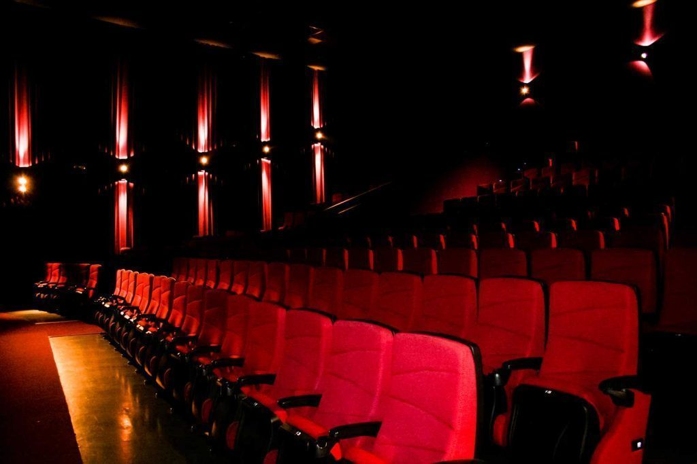
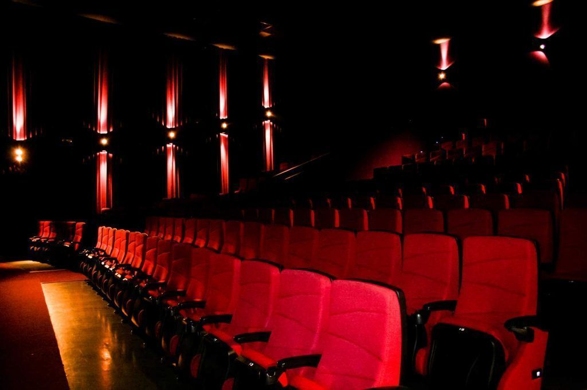

Salas de cine
Ubicado en el Shopping Portal de Tucumánm, Cinema te ofrece variados y distintos formatos de salas de cine para que puedas vivir una experiencia única a tu gusto y a tu medida. Contamos con las tradicionales salas de cine 2D, las salas 3D, y las salas 3D X-tremo.
Cine 3D
Cinema posee una excelente tecnología y calidad para ver películas en 3D.
Este sistema permite proyectar en pantallas con una impresionante potencia lumínica ofreciendo la experiencia de ver cine en 3D. El hombre tiene la capacidad de ver en tres dimensiones porque cada uno de sus ojos ve una imágen levemente desfasada de la que ve el otro. Nuestro cerebro se ocupa de componer estas dos imágenes en una sola, calculando por esa diferencia la profundidad y la imagen en tres dimensiones. Sumado a la calidad de imagen, el sistema de proyección 3D está complementado con un poderoso equipo de sonido digital 7.1, con más de 8.000 watts de potencia y la más alta fidelidad reproducida con parlantes JBL.

 

Cine X-tremo
Nueva tecnología para películas en 2D y 3D
En 2012 Cinema instaló el sistema de proyección digital con 2 proyectores simultáneos: “Dual Projector”. Este sistema permite proyectar en pantallas gigantes y con una impresionante potencia lumínica producto de la sumatoria de luz que emiten los 2 proyectores funcionando al mismo tiempo y mejorando la experiencia de ver cine en 2D y 3D. Las salas Xtremo poseen además pantallas más grandes que duplican el tamaño de una pantalla de cine común 2D o 3D, alcanzando 200 m2 y hasta 4 pisos de altura. Sumado a la calidad de imagen, el sistema de proyección está complementado con un poderoso equipo de sonido digital 7.1, con más de 8.000 watts de potencia y la más alta fidelidad reproducida con parlantes JBL.